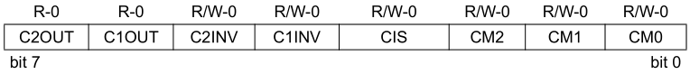
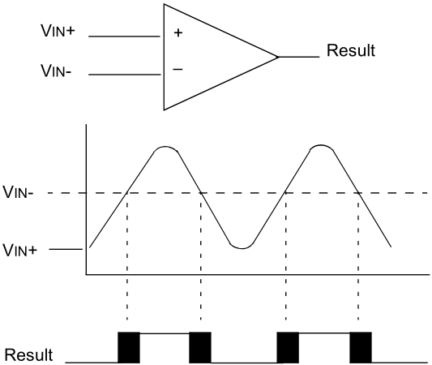
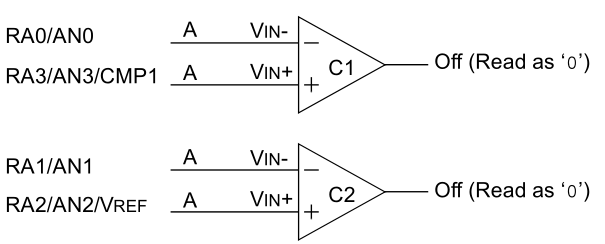
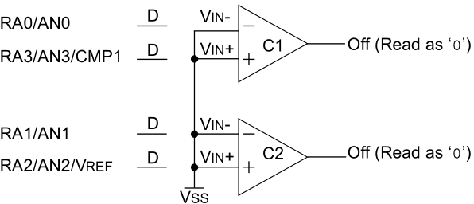
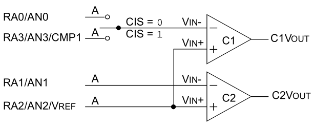
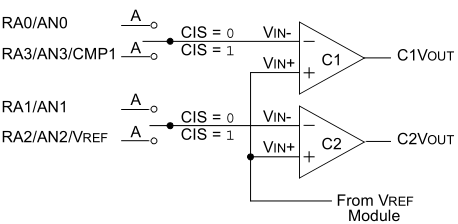

Episódio 20: Conhecendo o módulo Comparador e a interrupção associada
Neste episodio veremos o uso de 2 comparadores que compoem o modulo comparador, além de poder fazer uso de interrupção associada a esse modulo.
Nos episodios anteriores, para podermos fazer uso dos exemplos, sempre foi feita o desligamento do mudulo comparador.
A configuração do modulo comparador é feita pelo registrador CMCON (Comparator Configurator Register) enquanto os registradores INTCON (GIE e PEIE), PIE1 (CMIE), PIR1 (CMIF) e TRISA (TRISA<3:0>).
O registrador CMCON é visualizado na Figura 20.1.
| Figura 20.1 - Registrador CMCON |
|---|
|  |
| Fonte: ---- |
e o funcionamento dos comparadores são conforme a Figura 20.2.
| Figura 20.2 - Comparador e seu funcionamento |
|---|
|  |
| Fonte: ---- |
Os bits de configuração dos modos de trabalho possiveis são exibidos na Tabela 20.1.
| Tabela 20.1 - Modos de operação do modulo comparador | ||||||||||||||||||||||||||||||||||||
|---|---|---|---|---|---|---|---|---|---|---|---|---|---|---|---|---|---|---|---|---|---|---|---|---|---|---|---|---|---|---|---|---|---|---|---|---|
|
||||||||||||||||||||||||||||||||||||
| Fonte: ----- |
Neste momento falaremos dos bits C1OUT, C2OUT, C1INV e C2INV do registrador CMCON pois são fundamentais para a leitura dos estados processados pelos comparadores.
Os bits C1OUT (C2OUT) é o bit reponsável por armazenar o estado da saída do comparador C1 (C2). Já o bit C1INV (C2INV) é o bit com a função de inverter o valor da saída em C1OUT (C2OUT).
Exemplo: Se a porta não-inversora (VIN+) do comparador 1 (C1) tiver uma tensão eletrica aplicada nela de 3,3 V e na porta inversora (VIN-) tiver uma tensão eletrica de 1,2 V aplicada, a saída C1OUT do comparador C1 ficará em nivel alto - valor 1 se o valor do bit C1INV for igual a 0, porém se C1INV for igual a 1 para as mesmas condições (VIN+ = 3,3 V e VIN- = 1,2 V) a saída C1OUT ficará em nível baixo - valor 0.
O primeiro modo de trabalho do modulo comparador é o modo de reset quando CM<2:0> conforme Figura 20.3. Neste modo as saidas estão em nivel baixo, isto é, as saidas dos comparadores C1 e C2 tem seus valores zero nos bits C1OUT e C2OUT de CMCON quando os bits C1INV e C2INV são iguais a 0 e os pinos estarão trabalhando como pinos analogicos.
| Figura 20.3 - Modo reset do modulo comparador |
|---|
|  |
| Fonte: -------- |
O segundo modo é quando CM<2:0> = 111, no qual os comparadores estão desligados e os pinos RA0 e RA3 estão trabalhando como pinos digitais e as saídas e entradas dos comparadores estão em nivel baixo conforme Figura 20.4.
| Figura 20.4 - Modo desligado do modulo comparador |
|---|
|  |
| Fonte: -------- |
Vejamos o caso onde há necessidade de trabalhar com duas entradas multiplixedas conforme Figura 20.5 (CM<2:0> = 001) e Figura 20.6 (CM<2:0> = 010) com três.
| Figura 20.5 - Três entradas multiplexadas para dois comparadores olhar a definicao de quantas entrada multiplexadas |
|---|
|  |
| Fonte: -------- |
| Figura 20.6 - Quatro entradas multiplexadas para dois comparadores olhar a definicao de quantas entrada multiplexadas |
|---|
|  |
| Fonte: -------- |
Na Figura 20.x está sendo usado o modo de três entradas multiplexadas CM<2:0> = 001, no qual os pinos RA0 e RA3 serão mupliplexadas, no qual esse controle é feito pelo bit CIS do registrador CMCON. Assim, se o bit CIS for igual a 0, o pino RA0 será conectador internamente a porta inversora do comparador 1, mas caso CIS for igual a 1, será o pino RA3 conectado internamente a porta inversora do comparador 1.
Existem outros modos e você pode ve-los no datasheet do disposito no [colocar link] na página 64.
Agora veremos um exemplo para monitorar temperatura por limite inferior e superior dado um sensor de temperatura LM35 com saida analogica e por dois potenciometros usados para em dois divisores de tensõa. conforme Figura 20.7 e fazendo uso do modo de dois comparadores referencia comum (CM<2:0> = 011).
| Figura 20.7 - Esquema eletrico do exemplo |
|---|
|
|
| Fonte: Próprio autor (2020) |
A regra é que quando a tensão nos pinos RA2/RA3 (portas não-inversora):
- for menor que a tensão no pino RA0 (porta inversora do comparador C1) ativar o pino RB4, senão desativa RB4;
- for maior que a tensão no pino RA1 (porta inversora do comparador C2) ativa o pino RB5, senão desativa RB5.
A solução é dada pelo segunte c´dogio:
| Figura 20.8 - COLOCAR AQUI O CIRCUITO ELETRONICO |
|---|
|
|
| Fonte: Próprio autor (2020) |
Veremos agora como utilizar a interrupção associada a esse modulo.
A interrupção sobre o modulo comparador ocorre quando há uma troca de estados nos bits C1OUT ou C2OUT.
O primeiro bit a ser configurado (setados) é bit CMIE do registrador PIE1, após o bit PEIE do registrador INTCON deve ser setado, a interrupção já estará em funcionamento e o bit do registrador PIR1 tem o estado da interrupção.
Nota: If a change in the CMCON register (C1OUT or C2OUT) should occur when a read operation is being executed (start of the Q2 cycle), then the CMIF (PIR1<6>) interrupt flag may not get set.
Exemplo: Modificação do exemplo __ aplicando o uso de interrupção.
| Código 15.1 - Código do exemplo de uso da interrupção do Timer1 |
|---|
|
| Fonte: Autor 2020 |